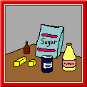
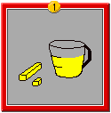
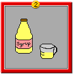
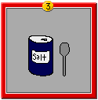
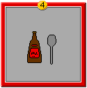
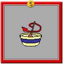
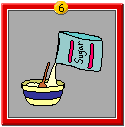
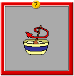
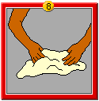
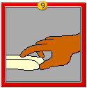

| |
Fondant |
I was searching through cookbooks trying to find a candybar recipe for my Kitchen Chemistry class. All of the recipes started with something called fondant. I had no idea what fondant was. Fondant is the smooth sugar substance found in the center of some candybars. -KarenUse the recipe below to make your own fondant.
Ingredients:

- 158 mL (2/3 cup) soft butter
- 158 mL (2/3 cup) light corn syrup
- 2.5 mL (1/2 tsp) salt
- 907 g (2 lbs) powdered sugar
- 5 mL (1 tsp) extract-any flavor
Instructions:



1. Put butter in bowl
2. Add corn syrup
3. Add salt


4. Add extract
5. Stir
6. Slowly add powdered sugar


7. Stir each time sugar is added
8. Knead until smooth
9. Form a piece into the shape of a candy barYOUR FONDANT IS READY TO BE DIPPED IN CHOCOLATE!

|
|
What could you add to your fondant to make it crunchy? How could you make it taste like mint, or banana? Try to mold your fondant into the shape of a flower, or a fish. How do you say fondant? |
|
|
|
|
|
|
|
|
|
|
 Gathered by topic |
 Connected together |
 Index of ideas |
 Search |

 Peek inside a candy factory
Peek inside a candy factory